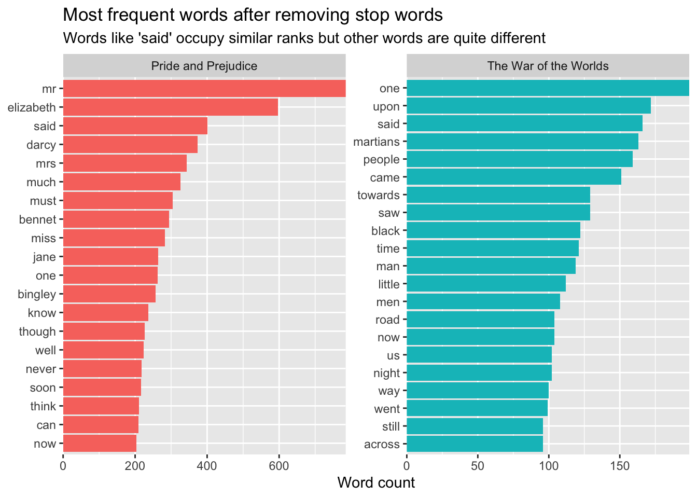
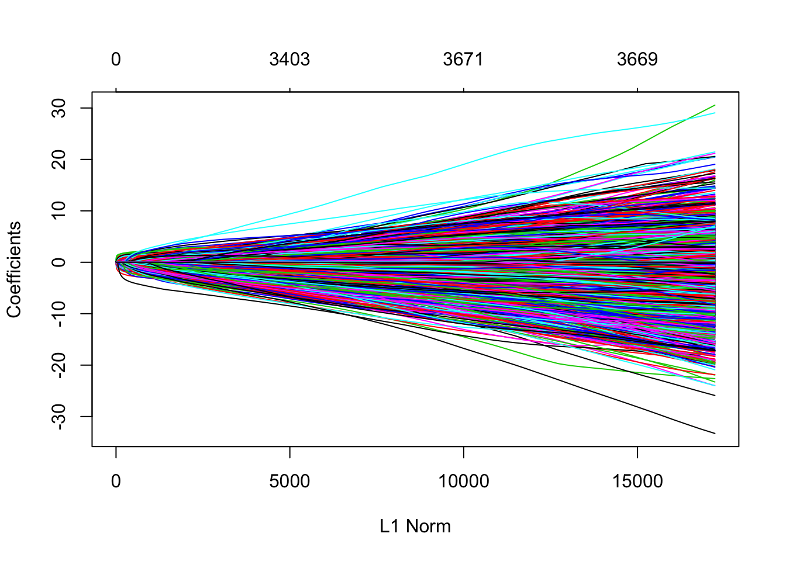
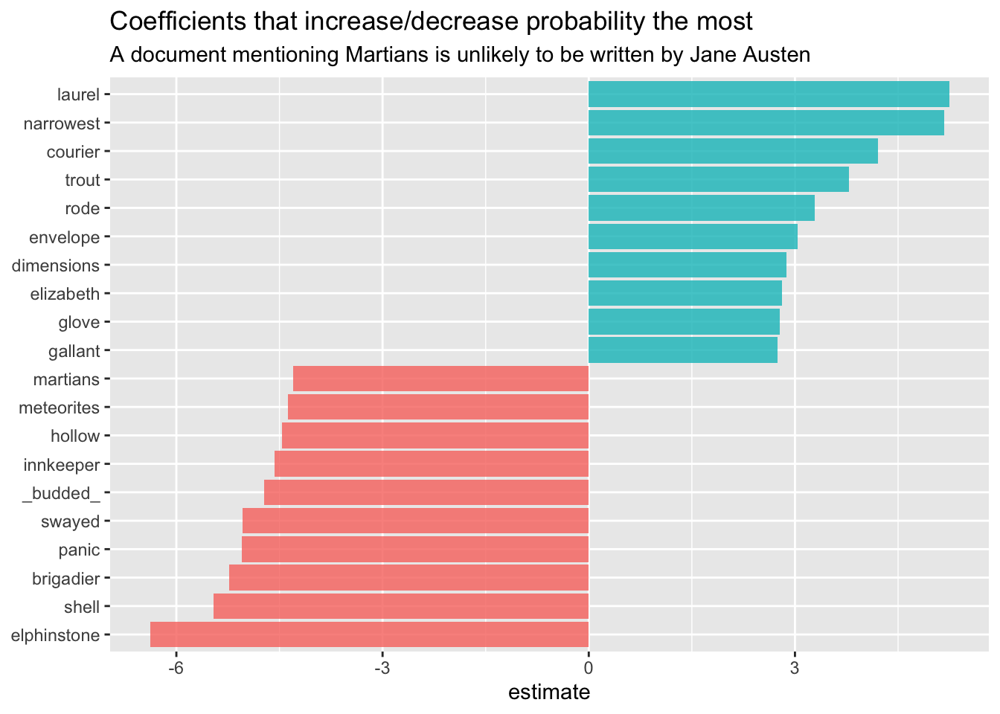
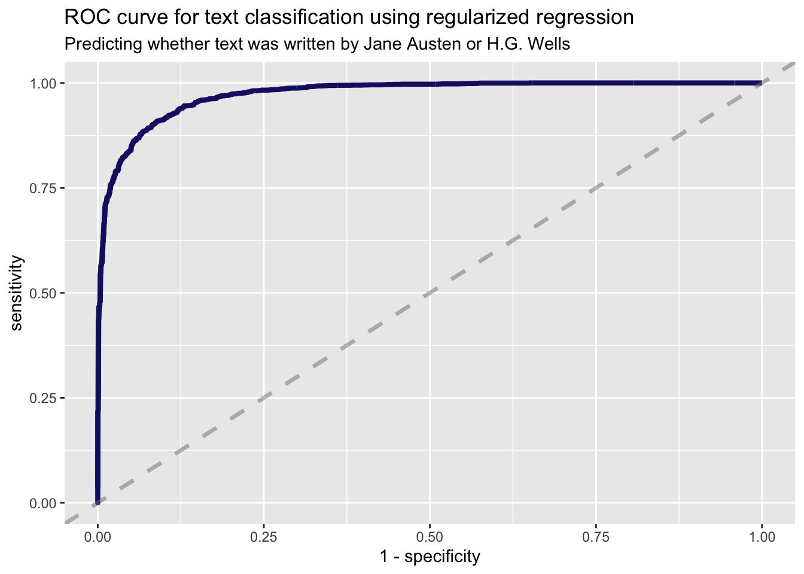

silge_text_classification
Sefa Ozalp
2020-02-16
Last updated: 2020-02-16
Checks: 7 0
Knit directory: text_classification/
This reproducible R Markdown analysis was created with workflowr (version 1.4.0). The Checks tab describes the reproducibility checks that were applied when the results were created. The Past versions tab lists the development history.
Great! Since the R Markdown file has been committed to the Git repository, you know the exact version of the code that produced these results.
Great job! The global environment was empty. Objects defined in the global environment can affect the analysis in your R Markdown file in unknown ways. For reproduciblity it’s best to always run the code in an empty environment.
The command set.seed(20200216) was run prior to running the code in the R Markdown file. Setting a seed ensures that any results that rely on randomness, e.g. subsampling or permutations, are reproducible.
Great job! Recording the operating system, R version, and package versions is critical for reproducibility.
Nice! There were no cached chunks for this analysis, so you can be confident that you successfully produced the results during this run.
Great job! Using relative paths to the files within your workflowr project makes it easier to run your code on other machines.
Great! You are using Git for version control. Tracking code development and connecting the code version to the results is critical for reproducibility. The version displayed above was the version of the Git repository at the time these results were generated.
Note that you need to be careful to ensure that all relevant files for the analysis have been committed to Git prior to generating the results (you can use wflow_publish or wflow_git_commit). workflowr only checks the R Markdown file, but you know if there are other scripts or data files that it depends on. Below is the status of the Git repository when the results were generated:
Ignored files:
Ignored: .Rproj.user/
Ignored: docs/figure/
Note that any generated files, e.g. HTML, png, CSS, etc., are not included in this status report because it is ok for generated content to have uncommitted changes.
These are the previous versions of the R Markdown and HTML files. If you’ve configured a remote Git repository (see ?wflow_git_remote), click on the hyperlinks in the table below to view them.
| File | Version | Author | Date | Message |
|---|---|---|---|---|
| Rmd | 1390d5a | Sefa Ozalp | 2020-02-16 | add tidy TC |
Introduction
# https://www.r-bloggers.com/text-classification-with-tidy-data-principles/
library(tidyverse)── Attaching packages ────────────────────────────────────── tidyverse 1.2.1 ──✔ ggplot2 3.2.1 ✔ purrr 0.3.2
✔ tibble 2.1.3 ✔ dplyr 0.8.3
✔ tidyr 1.0.0 ✔ stringr 1.4.0
✔ readr 1.3.1 ✔ forcats 0.4.0── Conflicts ───────────────────────────────────────── tidyverse_conflicts() ──
✖ dplyr::filter() masks stats::filter()
✖ dplyr::lag() masks stats::lag()library(gutenbergr)
library(tidytext)Import two books
titles <- c(
"The War of the Worlds",
"Pride and Prejudice"
)
books <- gutenberg_works(title %in% titles) %>%
gutenberg_download(meta_fields = "title") %>%
mutate(document = row_number())Determining mirror for Project Gutenberg from http://www.gutenberg.org/robot/harvestUsing mirror http://aleph.gutenberg.orgbooks %>%
rmarkdown::paged_table()books %>%
count(title)# A tibble: 2 x 2
title n
<chr> <int>
1 Pride and Prejudice 13030
2 The War of the Worlds 6474books_tidy <- books %>%
unnest_tokens(word, text, token = "words") %>%
group_by(word) %>%
# filter(n() > 10) %>%
ungroup()Chart of most freq words
books_tidy %>%
count(title, word, sort = T) %>%
anti_join(get_stopwords()) %>%
group_by(title) %>%
top_n(20) %>%
ungroup() %>%
ggplot(aes(reorder_within( word, n, title),n, fill=title))+
geom_col(show.legend = F)+
coord_flip()+
scale_x_reordered() + # this is from tidytext and a bit hacky
facet_wrap(~title, scales = "free")+
scale_y_continuous(expand = c(0, 0)) +
labs(
x = NULL, y = "Word count",
title = "Most frequent words after removing stop words",
subtitle = "Words like 'said' occupy similar ranks but other words are quite different"
)Joining, by = "word"Selecting by n
NULLNULLBuilding a ML model
library(rsample)
books_split <- books %>%
select(document) %>%
initial_split()
train_data <- training(books_split)
test_data <- testing(books_split)
# create a sparse amtrix
sparse_words <- books_tidy %>%
count(document, word) %>%
inner_join(train_data) %>% # this act as a filter here
cast_sparse(document, word, n)Joining, by = "document"class(sparse_words)[1] "dgCMatrix"
attr(,"package")
[1] "Matrix"dim(sparse_words)[1] 12123 9475word_rownames <- as.integer(rownames(sparse_words))
books_joined <- tibble(document = word_rownames) %>%
left_join(books %>%
select(document, title))# dataframe with response variableJoining, by = "document"library(glmnet)Loading required package: Matrix
Attaching package: 'Matrix'The following objects are masked from 'package:tidyr':
expand, pack, unpackLoading required package: foreach
Attaching package: 'foreach'The following objects are masked from 'package:purrr':
accumulate, whenLoaded glmnet 2.0-18library(doMC)Loading required package: iteratorsLoading required package: parallelregisterDoMC(cores = 4)is_jane <- books_joined$title == "Pride and Prejudice"
model <- cv.glmnet(sparse_words, is_jane,
family = "binomial",
parallel = TRUE, keep = TRUE
)plot(model)
plot(model$glmnet.fit)
Understanding the model
library(broom)
coefs <- model$glmnet.fit %>%
tidy() %>%
filter(lambda == model$lambda.1se)
coefs %>%
group_by(estimate > 0) %>%
top_n(10, abs(estimate)) %>%
ungroup() %>%
ggplot(aes(fct_reorder(term, estimate), estimate, fill = estimate > 0)) +
geom_col(alpha = 0.8, show.legend = FALSE) +
coord_flip() +
labs(
x = NULL,
title = "Coefficients that increase/decrease probability the most",
subtitle = "A document mentioning Martians is unlikely to be written by Jane Austen"
)
Evaluate the model
intercept <- coefs %>%
filter(term == "(Intercept)") %>%
pull(estimate)
classifications <- books_tidy %>%
inner_join(test_data) %>%
inner_join(coefs, by = c("word" = "term")) %>%
group_by(document) %>%
summarize(score = sum(estimate)) %>%
mutate(probability = plogis(intercept + score))Joining, by = "document"classifications# A tibble: 3,993 x 3
document score probability
<int> <dbl> <dbl>
1 29 -2.91 0.128
2 39 -4.06 0.0442
3 40 -2.13 0.242
4 41 -4.15 0.0405
5 47 -0.571 0.602
6 66 -1.89 0.289
7 68 -5.43 0.0116
8 74 -3.58 0.0698
9 76 0.0557 0.739
10 77 -6.03 0.00639
# … with 3,983 more rowsModel performance metrics
library(yardstick)For binary classification, the first factor level is assumed to be the event.
Set the global option `yardstick.event_first` to `FALSE` to change this.
Attaching package: 'yardstick'The following object is masked from 'package:readr':
speccomment_classes <- classifications %>%
left_join(books %>%
select(title, document), by = "document") %>%
mutate(title = as.factor(title))
comment_classes %>%
roc_curve(title, probability) %>%
ggplot(aes(x = 1 - specificity, y = sensitivity)) +
geom_line(
color = "midnightblue",
size = 1.5
) +
geom_abline(
lty = 2, alpha = 0.5,
color = "gray50",
size = 1.2
) +
labs(
title = "ROC curve for text classification using regularized regression",
subtitle = "Predicting whether text was written by Jane Austen or H.G. Wells"
)
comment_classes %>%
roc_auc(title, probability)# A tibble: 1 x 3
.metric .estimator .estimate
<chr> <chr> <dbl>
1 roc_auc binary 0.973comment_classes %>%
mutate(
prediction = case_when(
probability > 0.5 ~ "Pride and Prejudice",
TRUE ~ "The War of the Worlds"
),
prediction = as.factor(prediction)
) %>%
conf_mat(title, prediction) Truth
Prediction Pride and Prejudice The War of the Worlds
Pride and Prejudice 2598 253
The War of the Worlds 80 1062Understand misclassifications
Mis-classified as written by Jane Austen
comment_classes %>%
filter(
probability > .8,
title == "The War of the Worlds"
) %>%
sample_n(10) %>%
inner_join(books %>%
select(document, text)) %>%
select(probability, text)Joining, by = "document"# A tibble: 10 x 2
probability text
<dbl> <chr>
1 0.835 nothing I could do would moderate his speech.
2 0.819 My brother woke from his torpor of astonishment and lifted …
3 0.870 find Lord Hilton at his house, but I was told he was expect…
4 0.892 the robbers made off, and his companion followed him, cursi…
5 0.931 would be the same. His own body would be a cope of lead to…
6 0.971 certain further details which, although they were not all e…
7 0.833 first encounter, this first glimpse, I was overcome with di…
8 0.844 He relapsed into silence, with his chin now sunken almost t…
9 0.889 there his knowledge ended. He presented them as tilted, st…
10 0.869 all seriously. Yet though they wore no clothing, it was in…Misclassified as not written by Jane
comment_classes %>%
filter(
probability < .3,
title == "Pride and Prejudice"
) %>%
sample_n(10) %>%
inner_join(books %>%
select(document, text)) %>%
select(probability, text)Joining, by = "document"# A tibble: 10 x 2
probability text
<dbl> <chr>
1 0.274 "of men, and that he hates me.\""
2 0.0823 We have tried two or three subjects already without success…
3 0.292 and telling again what had already been written; and when i…
4 0.242 felt any, it could hardly have stood its ground against the…
5 0.149 impressed on their memories than that their brother's fortu…
6 0.262 seemed likely, the advice and entreaty of so near a relatio…
7 0.266 impossible. No man of common humanity, no man who had any v…
8 0.176 "required. A thousand things may arise in six months!\""
9 0.0774 The wisest and the best of men--nay, the wisest and best of…
10 0.284 the storm was blown over. At such a moment, the arrival of …
sessionInfo()R version 3.6.1 (2019-07-05)
Platform: x86_64-apple-darwin15.6.0 (64-bit)
Running under: macOS Mojave 10.14.6
Matrix products: default
BLAS: /Library/Frameworks/R.framework/Versions/3.6/Resources/lib/libRblas.0.dylib
LAPACK: /Library/Frameworks/R.framework/Versions/3.6/Resources/lib/libRlapack.dylib
locale:
[1] en_GB.UTF-8/en_GB.UTF-8/en_GB.UTF-8/C/en_GB.UTF-8/en_GB.UTF-8
attached base packages:
[1] parallel stats graphics grDevices utils datasets methods
[8] base
other attached packages:
[1] yardstick_0.0.4 broom_0.5.2 doMC_1.3.6 iterators_1.0.12
[5] glmnet_2.0-18 foreach_1.4.7 Matrix_1.2-17 rsample_0.0.5
[9] tidytext_0.2.2 gutenbergr_0.1.5 forcats_0.4.0 stringr_1.4.0
[13] dplyr_0.8.3 purrr_0.3.2 readr_1.3.1 tidyr_1.0.0
[17] tibble_2.1.3 ggplot2_3.2.1 tidyverse_1.2.1
loaded via a namespace (and not attached):
[1] httr_1.4.1 jsonlite_1.6 modelr_0.1.5
[4] assertthat_0.2.1 triebeard_0.3.0 urltools_1.7.3
[7] cellranger_1.1.0 yaml_2.2.0 globals_0.12.4
[10] pillar_1.4.2 backports_1.1.5 lattice_0.20-38
[13] glue_1.3.1 pROC_1.15.3 digest_0.6.23
[16] rvest_0.3.4 colorspace_1.4-1 plyr_1.8.4
[19] htmltools_0.3.6 pkgconfig_2.0.3 listenv_0.7.0
[22] haven_2.1.1 scales_1.0.0 whisker_0.4
[25] git2r_0.26.1 generics_0.0.2 ellipsis_0.3.0
[28] withr_2.1.2 furrr_0.1.0 lazyeval_0.2.2
[31] cli_1.1.0 magrittr_1.5 crayon_1.3.4
[34] readxl_1.3.1 evaluate_0.14 stopwords_1.0
[37] tokenizers_0.2.1 janeaustenr_0.1.5 fs_1.3.1
[40] future_1.14.0 fansi_0.4.0 nlme_3.1-141
[43] SnowballC_0.6.0 xml2_1.2.2 tools_3.6.1
[46] hms_0.5.2 lifecycle_0.1.0 munsell_0.5.0
[49] compiler_3.6.1 rlang_0.4.2 grid_3.6.1
[52] rstudioapi_0.10 labeling_0.3 rmarkdown_1.15
[55] gtable_0.3.0 codetools_0.2-16 curl_4.2
[58] R6_2.4.0 lubridate_1.7.4 knitr_1.25
[61] utf8_1.1.4 zeallot_0.1.0 workflowr_1.4.0
[64] rprojroot_1.3-2 stringi_1.4.3 Rcpp_1.0.3
[67] vctrs_0.2.1 tidyselect_0.2.5 xfun_0.9